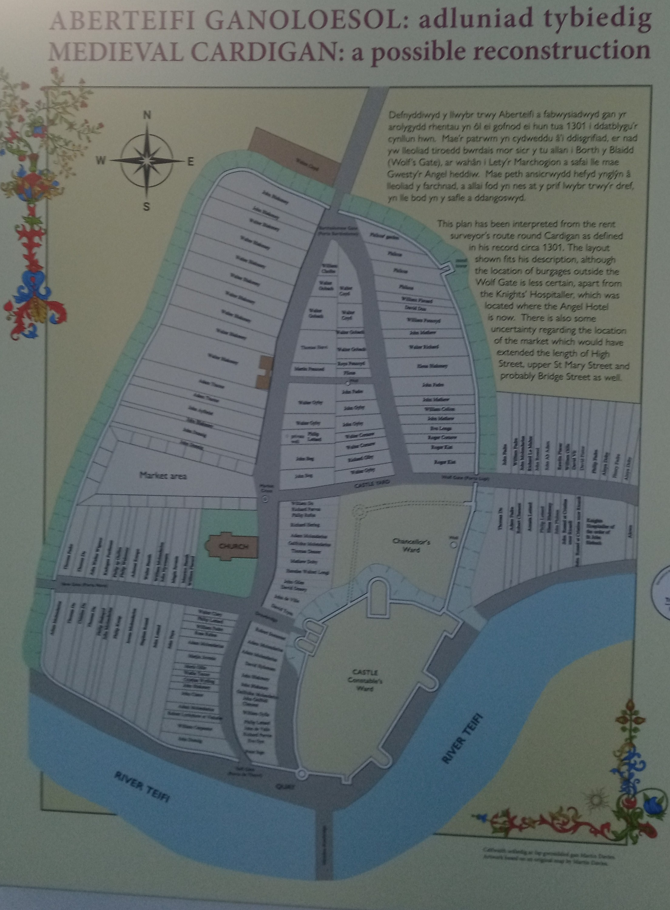

The Guildhall was built in 1860. With one of the foundation stones for the new building was laid by the mayor, Richard David Jenkins, on July 8th 1858. It was designed by Robert Jewell Withers in the Gothic Revival Style. It would then be built by local builders David Jenkins, John Davies and John Thomas out of Blue Lias stone with it costing £4,055. With the building opening on July 9th 1860.
A Russian cannon was captured during the charge of the Light Brigade during the battle of Balaclava in October 1854 which was led by Lord Cardigan during the Crimean War. This would be installed outside the building in 1871. Later, in the early 1890s a clock tower with a pyramid-shaped roof would be installed on the roof of the left side of the building. The clock tower being designed by Richard Thomas and built by John Evans in August 1892.
In 1950 a public library would be opened on the bottom floor. With the building acting as a meeting place for the Cardigan Bourogh Council for the remainder of the 20th century until the Cerdigion County Council was formed in 1974. The library would then be relocated to the Ganolfan Teifi in 1994 being replaced by an art gallery. A refurbishment program would be carried out in the Guildhall by Menter Teifi a non-profit local regeneration comapny, with financial support from the Heritage Lottery Fund. The initial refurbishment would finish in 2008 costing around £2.5 million. With further referbishments in the years following like from 2022 to 2024.
